install.packages("neuralnet")library(MASS)
library(neuralnet)
library(corrplot)
data=Boston
head(Boston)## crim zn indus chas nox rm age dis rad tax ptratio black
## 1 0.00632 18 2.31 0 0.538 6.575 65.2 4.0900 1 296 15.3 396.90
## 2 0.02731 0 7.07 0 0.469 6.421 78.9 4.9671 2 242 17.8 396.90
## 3 0.02729 0 7.07 0 0.469 7.185 61.1 4.9671 2 242 17.8 392.83
## 4 0.03237 0 2.18 0 0.458 6.998 45.8 6.0622 3 222 18.7 394.63
## 5 0.06905 0 2.18 0 0.458 7.147 54.2 6.0622 3 222 18.7 396.90
## 6 0.02985 0 2.18 0 0.458 6.430 58.7 6.0622 3 222 18.7 394.12
## lstat medv
## 1 4.98 24.0
## 2 9.14 21.6
## 3 4.03 34.7
## 4 2.94 33.4
## 5 5.33 36.2
## 6 5.21 28.7hist(data$age)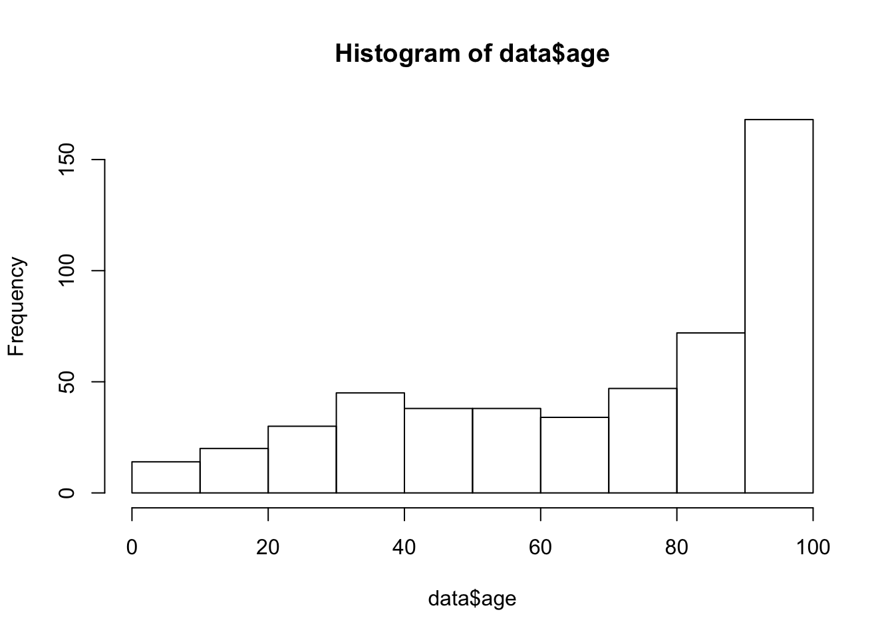
hist(data$tax)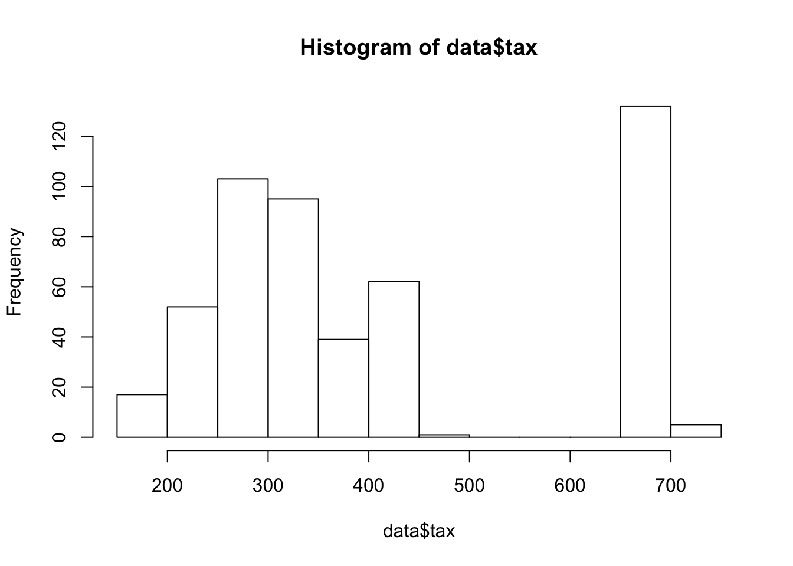
hist(data$crim)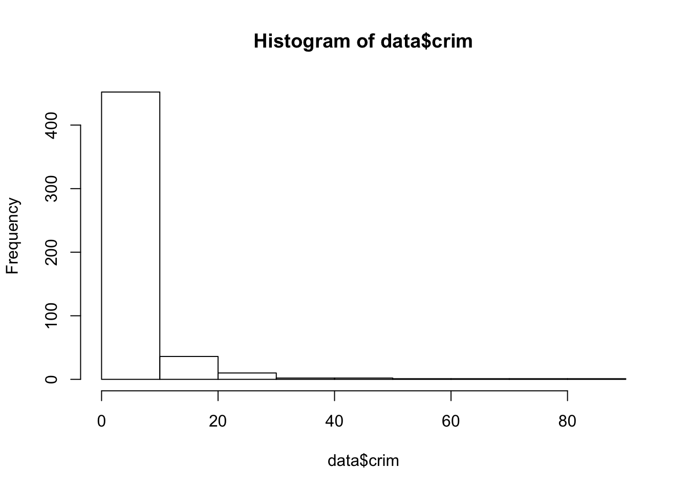
M=cor(data)
corrplot(M)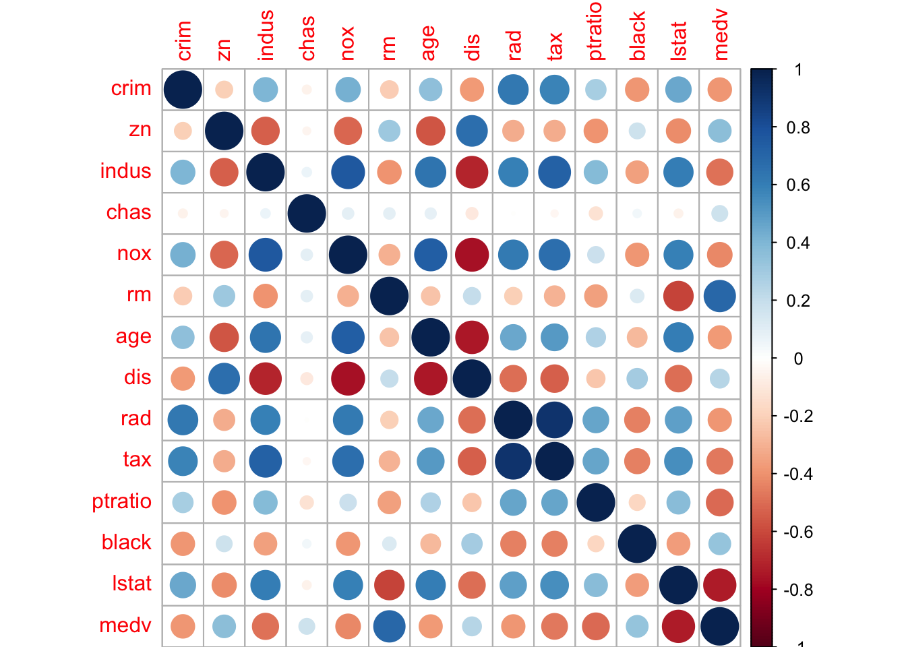
library(caret)## Loading required package: lattice## Loading required package: ggplot2ind=createDataPartition(Boston$medv, times = 1,p = 0.3,list=FALSE)
train=data[ind,]
test=data[-ind,]
dim(train);dim(test)## [1] 154 14## [1] 352 14lm.fit <- glm(medv~., data=train)
summary(lm.fit)##
## Call:
## glm(formula = medv ~ ., data = train)
##
## Deviance Residuals:
## Min 1Q Median 3Q Max
## -9.3933 -2.3257 -0.5386 1.9159 19.2650
##
## Coefficients:
## Estimate Std. Error t value Pr(>|t|)
## (Intercept) 2.114e+01 8.002e+00 2.642 0.00917 **
## crim 7.493e-03 6.893e-02 0.109 0.91360
## zn -3.371e-04 2.065e-02 -0.016 0.98700
## indus 7.569e-03 9.720e-02 0.078 0.93804
## chas 1.269e-01 1.344e+00 0.094 0.92490
## nox -1.421e+01 5.790e+00 -2.454 0.01537 *
## rm 5.997e+00 6.462e-01 9.280 2.87e-16 ***
## age -1.266e-02 2.081e-02 -0.608 0.54402
## dis -7.913e-01 3.179e-01 -2.489 0.01396 *
## rad 2.093e-01 1.101e-01 1.901 0.05935 .
## tax -1.363e-02 5.985e-03 -2.278 0.02427 *
## ptratio -1.155e+00 2.209e-01 -5.231 6.03e-07 ***
## black 8.918e-03 4.417e-03 2.019 0.04541 *
## lstat -2.300e-01 7.915e-02 -2.905 0.00426 **
## ---
## Signif. codes: 0 '***' 0.001 '**' 0.01 '*' 0.05 '.' 0.1 ' ' 1
##
## (Dispersion parameter for gaussian family taken to be 15.19712)
##
## Null deviance: 12104.8 on 153 degrees of freedom
## Residual deviance: 2127.6 on 140 degrees of freedom
## AIC: 871.41
##
## Number of Fisher Scoring iterations: 2pr.lm <- predict(lm.fit,test)
MSE.lm <- sum((pr.lm - test$medv)^2)/nrow(test)maxs <- apply(data, 2, max)
mins <- apply(data, 2, min)
scaled <- as.data.frame(scale(data, center = mins, scale = maxs - mins))
scale(c(1,2,3,4),center=1,scale=3)## [,1]
## [1,] 0.0000000
## [2,] 0.3333333
## [3,] 0.6666667
## [4,] 1.0000000
## attr(,"scaled:center")
## [1] 1
## attr(,"scaled:scale")
## [1] 3head(data)## crim zn indus chas nox rm age dis rad tax ptratio black
## 1 0.00632 18 2.31 0 0.538 6.575 65.2 4.0900 1 296 15.3 396.90
## 2 0.02731 0 7.07 0 0.469 6.421 78.9 4.9671 2 242 17.8 396.90
## 3 0.02729 0 7.07 0 0.469 7.185 61.1 4.9671 2 242 17.8 392.83
## 4 0.03237 0 2.18 0 0.458 6.998 45.8 6.0622 3 222 18.7 394.63
## 5 0.06905 0 2.18 0 0.458 7.147 54.2 6.0622 3 222 18.7 396.90
## 6 0.02985 0 2.18 0 0.458 6.430 58.7 6.0622 3 222 18.7 394.12
## lstat medv
## 1 4.98 24.0
## 2 9.14 21.6
## 3 4.03 34.7
## 4 2.94 33.4
## 5 5.33 36.2
## 6 5.21 28.7head(scaled)## crim zn indus chas nox rm age
## 1 0.0000000000 0.18 0.06781525 0 0.3148148 0.5775053 0.6416066
## 2 0.0002359225 0.00 0.24230205 0 0.1728395 0.5479977 0.7826982
## 3 0.0002356977 0.00 0.24230205 0 0.1728395 0.6943859 0.5993821
## 4 0.0002927957 0.00 0.06304985 0 0.1502058 0.6585553 0.4418126
## 5 0.0007050701 0.00 0.06304985 0 0.1502058 0.6871048 0.5283213
## 6 0.0002644715 0.00 0.06304985 0 0.1502058 0.5497222 0.5746653
## dis rad tax ptratio black lstat medv
## 1 0.2692031 0.00000000 0.20801527 0.2872340 1.0000000 0.08967991 0.4222222
## 2 0.3489620 0.04347826 0.10496183 0.5531915 1.0000000 0.20447020 0.3688889
## 3 0.3489620 0.04347826 0.10496183 0.5531915 0.9897373 0.06346578 0.6600000
## 4 0.4485446 0.08695652 0.06679389 0.6489362 0.9942761 0.03338852 0.6311111
## 5 0.4485446 0.08695652 0.06679389 0.6489362 1.0000000 0.09933775 0.6933333
## 6 0.4485446 0.08695652 0.06679389 0.6489362 0.9929901 0.09602649 0.5266667train_ <- scaled[ind,]
test_ <- scaled[-ind,]n <- names(train_)
f <- as.formula(paste("medv ~", paste(n[!n %in% "medv"], collapse = " + ")))
nn <- neuralnet(f,data=train_,hidden=c(5,3),linear.output=T)Viualisation des réseaux de neurones
plot(nn)Prédiction - réseaux de neurones
pr.nn <- compute(nn,test_[,1:13])
pr.nn_ <- pr.nn$net.result*(max(data$medv)-min(data$medv))+min(data$medv)
test.r <- (test_$medv)*(max(data$medv)-min(data$medv))+min(data$medv)
test$medv## [1] 21.6 36.2 28.7 22.9 16.5 18.9 15.0 18.9 21.7 18.2 19.9 20.2 18.2 13.6
## [15] 19.6 14.5 13.9 14.8 21.0 12.7 13.1 20.0 21.0 34.9 24.7 21.2 20.0 16.6
## [29] 14.4 19.7 20.5 25.0 23.4 18.9 35.4 24.7 31.6 18.7 16.0 22.2 25.0 24.2
## [43] 21.7 23.4 24.1 20.8 21.2 20.3 28.0 23.9 24.8 22.9 26.6 22.2 23.6 22.6
## [57] 22.0 22.9 25.0 20.6 28.4 26.5 18.6 20.1 19.5 19.5 19.4 21.7 22.8 18.8
## [71] 18.7 18.5 18.3 21.2 19.2 20.4 22.0 20.3 18.8 21.4 18.0 19.2 19.6 23.0
## [85] 17.4 17.1 13.3 14.0 14.4 13.4 15.6 13.8 15.6 15.4 21.5 19.6 19.4 15.6
## [99] 13.1 41.3 24.3 27.0 50.0 50.0 50.0 22.7 25.0 50.0 23.8 22.3 19.1 23.1
## [113] 23.6 22.6 29.4 24.6 37.2 39.8 36.2 37.9 32.5 26.4 29.6 50.0 29.8 37.0
## [127] 30.5 31.1 50.0 30.3 34.6 34.9 24.1 42.3 50.0 22.6 24.4 19.3 28.1 23.7
## [141] 23.3 28.7 21.5 23.0 26.7 30.1 50.0 37.6 31.6 24.3 41.7 29.0 24.0 25.1
## [155] 31.5 23.3 22.0 20.1 22.2 23.7 17.6 18.5 26.2 24.8 29.6 21.9 44.0 50.0
## [169] 36.0 30.1 31.0 36.5 22.8 30.7 43.5 21.1 25.2 24.4 35.2 32.4 32.0 33.2
## [183] 33.1 29.1 45.4 35.4 46.0 50.0 22.0 20.1 23.2 22.3 24.8 37.3 27.9 21.7
## [197] 28.6 27.1 20.3 22.5 29.0 24.8 22.0 33.1 36.1 33.4 28.2 16.1 22.1 19.4
## [211] 16.2 19.8 21.0 23.1 20.4 25.0 24.6 23.0 19.3 19.8 17.1 20.7 21.1 19.5
## [225] 18.5 20.6 18.7 32.7 16.5 23.9 31.2 17.5 17.2 23.1 22.9 24.1 18.6 30.1
## [239] 18.2 20.6 17.8 22.7 22.6 25.0 19.9 20.8 16.8 21.9 27.5 21.9 50.0 50.0
## [253] 50.0 50.0 50.0 13.8 15.0 13.3 13.1 10.4 10.9 11.3 12.3 8.8 7.2 10.2
## [267] 11.5 23.2 13.8 13.1 12.5 8.5 5.0 7.2 12.1 8.3 8.5 5.0 11.9 27.9
## [281] 27.5 17.2 17.9 16.3 7.2 7.5 10.4 8.8 8.4 11.7 8.3 10.9 11.0 9.5
## [295] 14.5 14.1 16.1 11.7 13.4 8.7 8.4 12.8 17.1 15.4 14.9 12.6 14.1 13.0
## [309] 13.4 15.2 17.8 14.1 12.7 13.5 14.9 20.0 16.4 20.2 21.4 19.0 19.1 19.1
## [323] 20.1 19.6 23.2 13.8 13.3 12.0 14.6 23.0 23.7 21.8 20.6 21.2 19.1 20.6
## [337] 15.2 7.0 13.6 20.1 21.8 24.5 23.1 19.7 18.3 21.2 16.8 22.4 20.6 23.9
## [351] 22.0 11.9MSE.nn <- sum((test$medv - pr.nn_)^2)/nrow(test_)
MSE.nn## [1] 23.77730652MSE.lm## [1] 31.06111235library(rpart)
rt.fit <- rpart(medv~., data=train)
summary(rt.fit)## Call:
## rpart(formula = medv ~ ., data = train)
## n= 154
##
## CP nsplit rel error xerror xstd
## 1 0.59529153910 0 1.00000000000 1.0133947081 0.14688930387
## 2 0.12259267492 1 0.40470846090 0.4610164868 0.04884130992
## 3 0.10671584575 2 0.28211578597 0.4066714530 0.04431206257
## 4 0.04126273789 3 0.17539994023 0.2633694311 0.02921147502
## 5 0.02238094129 4 0.13413720234 0.2056946078 0.02404280065
## 6 0.01804807355 5 0.11175626105 0.2173605993 0.02774167499
## 7 0.01000000000 6 0.09370818749 0.2113698661 0.02730031311
##
## Variable importance
## rm lstat indus crim ptratio age dis nox tax
## 35 17 12 6 6 6 5 5 4
## zn black rad
## 3 2 1
##
## Node number 1: 154 observations, complexity param=0.5952915391
## mean=22.36298701, MSE=78.60272095
## left son=2 (124 obs) right son=3 (30 obs)
## Primary splits:
## rm < 6.776 to the left, improve=0.5952915391, (0 missing)
## lstat < 8.075 to the right, improve=0.4770233708, (0 missing)
## indus < 7.225 to the right, improve=0.4121399928, (0 missing)
## crim < 0.62666 to the right, improve=0.3218826685, (0 missing)
## ptratio < 19.9 to the right, improve=0.3173477653, (0 missing)
## Surrogate splits:
## lstat < 4.265 to the right, agree=0.877, adj=0.367, (0 split)
## indus < 4.01 to the right, agree=0.864, adj=0.300, (0 split)
## ptratio < 13.85 to the right, agree=0.838, adj=0.167, (0 split)
## crim < 0.03529 to the right, agree=0.825, adj=0.100, (0 split)
## zn < 37.5 to the left, agree=0.825, adj=0.100, (0 split)
##
## Node number 2: 124 observations, complexity param=0.1225926749
## mean=18.9983871, MSE=26.71031998
## left son=4 (55 obs) right son=5 (69 obs)
## Primary splits:
## lstat < 14.665 to the right, improve=0.4480454241, (0 missing)
## dis < 2.4129 to the left, improve=0.4264377266, (0 missing)
## crim < 0.650835 to the right, improve=0.4076336243, (0 missing)
## nox < 0.5805 to the right, improve=0.4052679050, (0 missing)
## indus < 16.01 to the right, improve=0.3956626610, (0 missing)
## Surrogate splits:
## age < 88.95 to the right, agree=0.839, adj=0.636, (0 split)
## dis < 2.4129 to the left, agree=0.806, adj=0.564, (0 split)
## nox < 0.5635 to the right, agree=0.790, adj=0.527, (0 split)
## indus < 16.01 to the right, agree=0.782, adj=0.509, (0 split)
## tax < 434.5 to the right, agree=0.758, adj=0.455, (0 split)
##
## Node number 3: 30 observations, complexity param=0.1067158457
## mean=36.27, MSE=52.89476667
## left son=6 (20 obs) right son=7 (10 obs)
## Primary splits:
## rm < 7.468 to the left, improve=0.8140540684, (0 missing)
## black < 389.11 to the right, improve=0.2467821878, (0 missing)
## ptratio < 15.05 to the right, improve=0.1759574911, (0 missing)
## lstat < 4.33 to the right, improve=0.1745705502, (0 missing)
## crim < 0.08031 to the left, improve=0.1702391598, (0 missing)
## Surrogate splits:
## black < 389.11 to the right, agree=0.767, adj=0.3, (0 split)
## crim < 0.103735 to the left, agree=0.733, adj=0.2, (0 split)
## age < 78 to the left, agree=0.733, adj=0.2, (0 split)
## dis < 2.47725 to the right, agree=0.733, adj=0.2, (0 split)
## ptratio < 14.8 to the right, agree=0.733, adj=0.2, (0 split)
##
## Node number 4: 55 observations, complexity param=0.04126273789
## mean=15.12363636, MSE=19.51380496
## left son=8 (16 obs) right son=9 (39 obs)
## Primary splits:
## crim < 9.71509 to the right, improve=0.4653842621, (0 missing)
## dis < 2.0037 to the left, improve=0.3801202179, (0 missing)
## nox < 0.531 to the right, improve=0.3652160709, (0 missing)
## tax < 551.5 to the right, improve=0.3645830907, (0 missing)
## ptratio < 19.65 to the right, improve=0.3241115095, (0 missing)
## Surrogate splits:
## rad < 16 to the right, agree=0.818, adj=0.375, (0 split)
## nox < 0.646 to the right, agree=0.800, adj=0.313, (0 split)
## tax < 551.5 to the right, agree=0.800, adj=0.313, (0 split)
## age < 99.2 to the right, agree=0.782, adj=0.250, (0 split)
## dis < 1.66345 to the left, agree=0.782, adj=0.250, (0 split)
##
## Node number 5: 69 observations, complexity param=0.02238094129
## mean=22.08695652, MSE=10.9399748
## left son=10 (59 obs) right son=11 (10 obs)
## Primary splits:
## rm < 6.531 to the left, improve=0.3588981640, (0 missing)
## lstat < 9.65 to the right, improve=0.3568219438, (0 missing)
## age < 22.55 to the right, improve=0.2327873348, (0 missing)
## crim < 0.56137 to the right, improve=0.1564009962, (0 missing)
## indus < 3.305 to the right, improve=0.1444801565, (0 missing)
## Surrogate splits:
## lstat < 5.25 to the right, agree=0.928, adj=0.5, (0 split)
## crim < 0.031145 to the right, agree=0.913, adj=0.4, (0 split)
## indus < 3.095 to the right, agree=0.913, adj=0.4, (0 split)
##
## Node number 6: 20 observations
## mean=31.63, MSE=9.1501
##
## Node number 7: 10 observations
## mean=45.55, MSE=11.2065
##
## Node number 8: 16 observations
## mean=10.41875, MSE=8.284023438
##
## Node number 9: 39 observations, complexity param=0.01804807355
## mean=17.05384615, MSE=11.31376726
## left son=18 (32 obs) right son=19 (7 obs)
## Primary splits:
## nox < 0.531 to the right, improve=0.4951277935, (0 missing)
## black < 320.5 to the left, improve=0.2769208433, (0 missing)
## crim < 0.614845 to the right, improve=0.2463272119, (0 missing)
## ptratio < 19.65 to the right, improve=0.2450038596, (0 missing)
## dis < 2.76475 to the left, improve=0.1965291628, (0 missing)
## Surrogate splits:
## indus < 8.005 to the right, agree=0.897, adj=0.429, (0 split)
## chas < 0.5 to the left, agree=0.897, adj=0.429, (0 split)
## age < 73.1 to the right, agree=0.897, adj=0.429, (0 split)
## dis < 5.31625 to the left, agree=0.872, adj=0.286, (0 split)
## tax < 290.5 to the right, agree=0.872, adj=0.286, (0 split)
##
## Node number 10: 59 observations
## mean=21.27118644, MSE=6.770186728
##
## Node number 11: 10 observations
## mean=26.9, MSE=8.45
##
## Node number 18: 32 observations
## mean=15.946875, MSE=5.796865234
##
## Node number 19: 7 observations
## mean=22.11428571, MSE=5.324081633pr.rt <- predict(rt.fit,test)
MSE.rt <- sum((pr.rt - test$medv)^2)/nrow(test)library(randomForest)## randomForest 4.6-12## Type rfNews() to see new features/changes/bug fixes.##
## Attaching package: 'randomForest'## The following object is masked from 'package:ggplot2':
##
## marginrf.fit <- randomForest(medv~., data=train)
summary(rf.fit)## Length Class Mode
## call 3 -none- call
## type 1 -none- character
## predicted 154 -none- numeric
## mse 500 -none- numeric
## rsq 500 -none- numeric
## oob.times 154 -none- numeric
## importance 13 -none- numeric
## importanceSD 0 -none- NULL
## localImportance 0 -none- NULL
## proximity 0 -none- NULL
## ntree 1 -none- numeric
## mtry 1 -none- numeric
## forest 11 -none- list
## coefs 0 -none- NULL
## y 154 -none- numeric
## test 0 -none- NULL
## inbag 0 -none- NULL
## terms 3 terms callpr.rf <- predict(rf.fit,test)
MSE.rf <- sum((pr.rf - test$medv)^2)/nrow(test)?barplot
barplot(c(MSE.rt,MSE.lm,MSE.nn,MSE.rf),names.arg = c("abre","GLM","nn","rf"))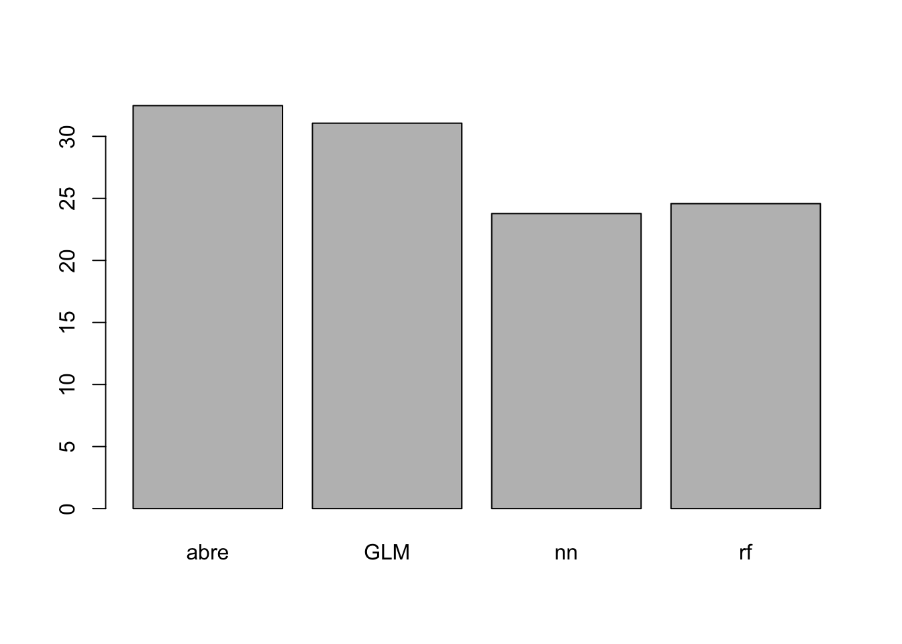
plot(test$medv,pr.nn_,col='red',main='Real vs predicted NN',pch=18,cex=0.7)
points(test$medv,pr.lm,col='blue',pch=18,cex=0.7)
points(test$medv,pr.rt)
points(test$medv,pr.rf,col="green",pch=13)
abline(0,1,lwd=2)
legend('bottomright',legend=c('NN','LM'),pch=18,col=c('red','blue'))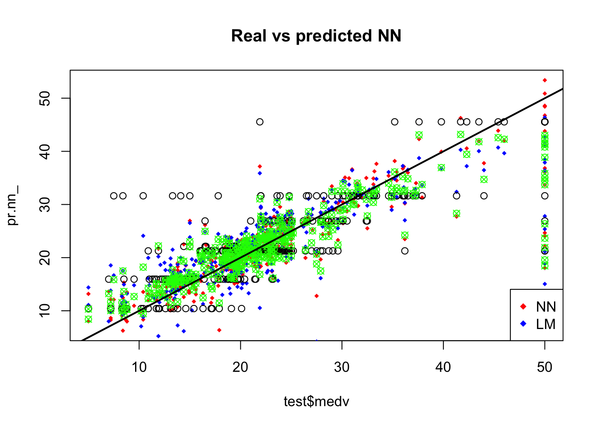
plot(test$medv,pr.nn_,col='red',main='Real vs predicted NN',pch=18,cex=0.7)
abline(0,1,lwd=2)
legend('bottomright',legend='NN',pch=18,col='red', bty='n')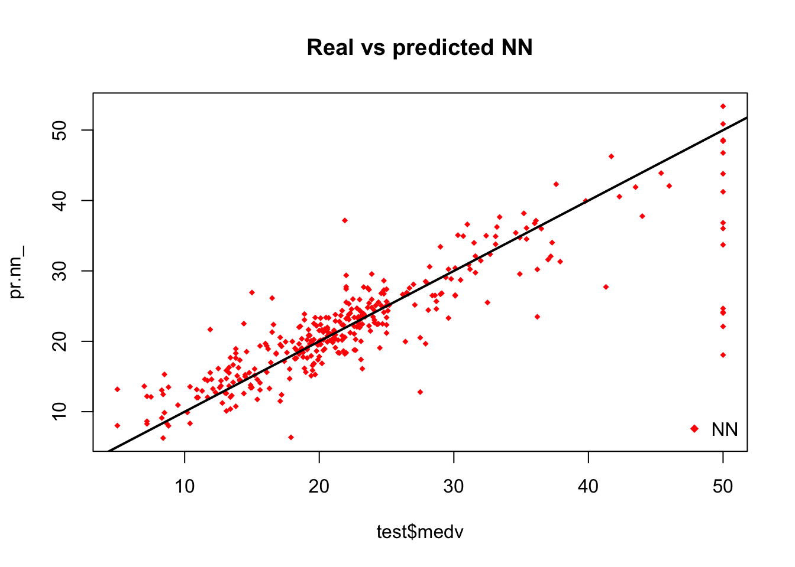
plot(test$medv,pr.lm,col='blue',main='Real vs predicted lm',pch=18, cex=0.7)
abline(0,1,lwd=2)
legend('bottomright',legend='LM',pch=18,col='blue', bty='n', cex=.95)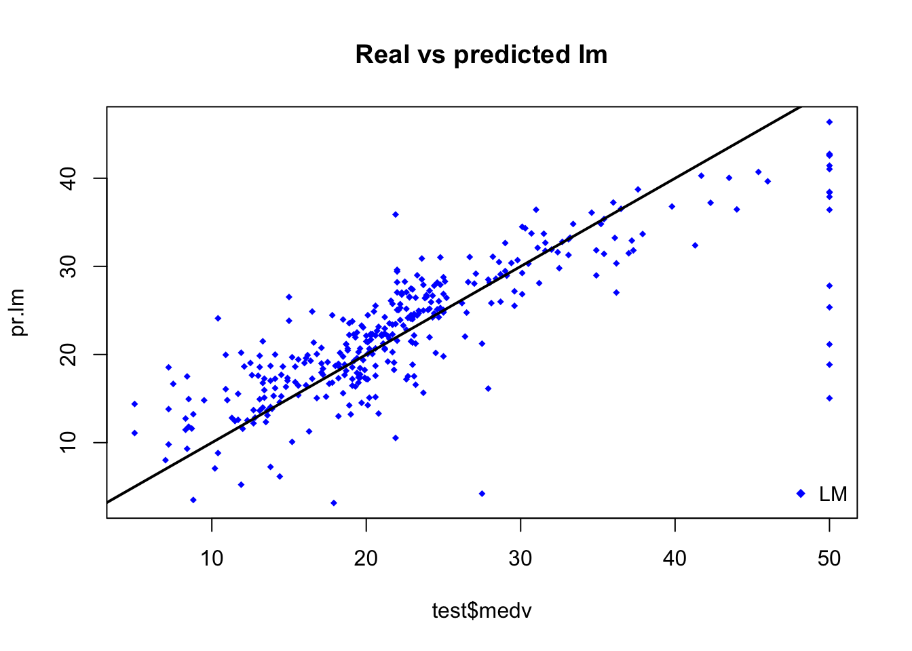
plot(test$medv,pr.rt)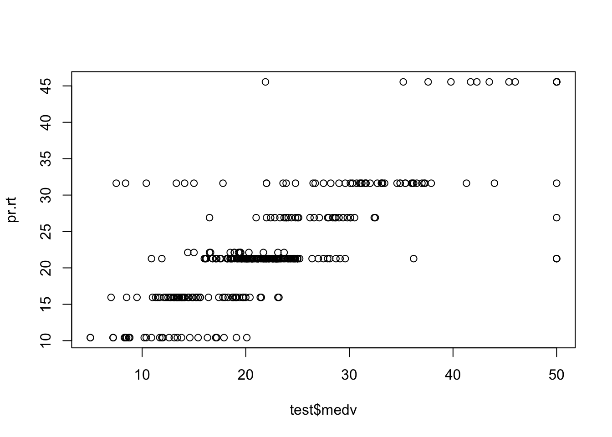
library(boot)##
## Attaching package: 'boot'## The following object is masked from 'package:lattice':
##
## melanomalm.fit <- glm(medv~.,data=data)
cv.glm(data,lm.fit,K=10)$delta[1]## [1] 23.55415432library(plyr)
cv.error=NULL
k=10
pbar <- create_progress_bar('text')
pbar$init(k)##
|
| | 0%for(i in 1:k){
index <- sample(1:nrow(data),round(0.9*nrow(data)))
train.cv <- scaled[index,]
test.cv <- scaled[-index,]
nn <- neuralnet(f,data=train.cv,hidden=c(5,2),linear.output=T)
pr.nn <- compute(nn,test.cv[,1:13])
pr.nn <- pr.nn$net.result*(max(data$medv)-min(data$medv))+min(data$medv)
test.cv.r <- (test.cv$medv)*(max(data$medv)-min(data$medv))+min(data$medv)
cv.error[i] <- sum((test.cv.r - pr.nn)^2)/nrow(test.cv)
pbar$step()
}##
|
|====== | 10%
|
|============= | 20%
|
|==================== | 30%
|
|========================== | 40%
|
|================================ | 50%
|
|======================================= | 60%
|
|============================================== | 70%
|
|==================================================== | 80%
|
|========================================================== | 90%
|
|=================================================================| 100%mean(cv.error)## [1] 13.27980084cv.error## [1] 14.321858703 8.850445671 22.536840473 5.498474175 5.523138198
## [6] 7.594841216 13.437108628 28.963917279 17.831447628 8.239936472boxplot(cv.error,xlab='MSE CV',col='cyan',
border='blue',names='CV error (MSE)',
main='CV error (MSE) for NN',horizontal=TRUE)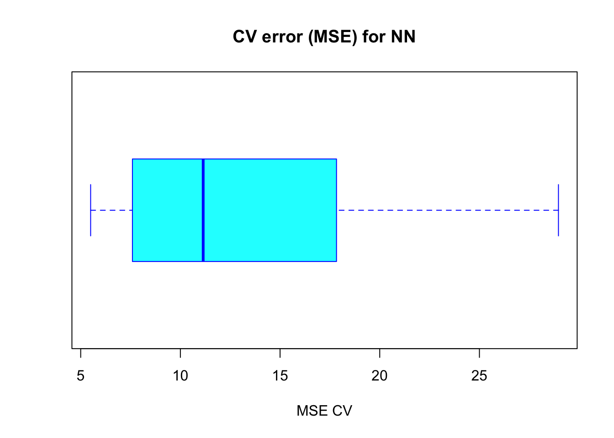
result <- rfcv(data, data$medv, cv.fold=3)
with(result, plot(n.var, error.cv, log="x", type="o", lwd=2))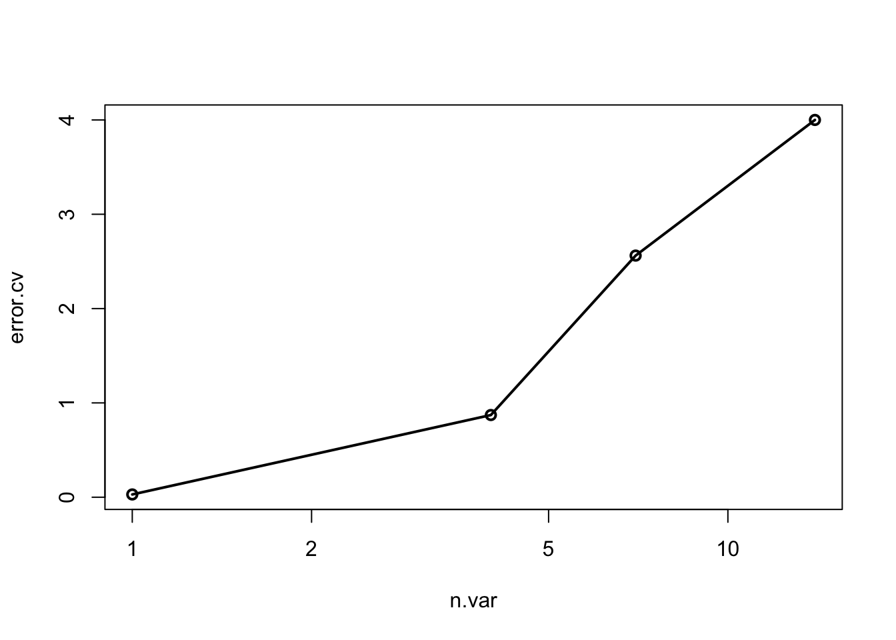
result <- replicate(5, rfcv(data, data$medv), simplify=FALSE)
error.cv <- sapply(result, "[[", "error.cv")
matplot(result[[1]]$n.var, cbind(rowMeans(error.cv), error.cv), type="l",
lwd=c(2, rep(1, ncol(error.cv))), col=1, lty=1, log="x",
xlab="Number of variables", ylab="CV Error")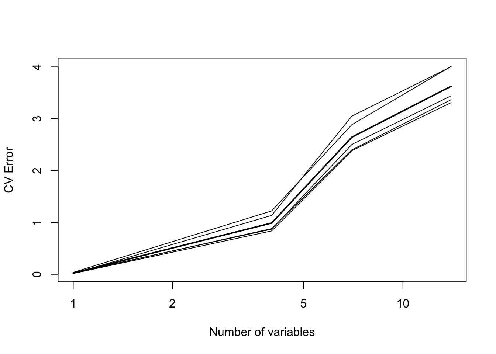
#### custom
cv.error=NULL
k=50
pbar <- create_progress_bar('text')
pbar$init(k)##
|
| | 0%for(i in 1:k){
index <- sample(1:nrow(data),round(0.9*nrow(data)))
train.cv <- data[index,]
test.cv <- data[-index,]
fit.rf <- randomForest(medv~., data=train)
pr.rf <- predict(fit.rf,test)
cv.error[i] <- sum((pr.rf - test$medv)^2)/nrow(test)
pbar$step()
}##
|
|= | 2%
|
|=== | 4%
|
|==== | 6%
|
|===== | 8%
|
|====== | 10%
|
|======== | 12%
|
|========= | 14%
|
|========== | 16%
|
|============ | 18%
|
|============= | 20%
|
|============== | 22%
|
|================ | 24%
|
|================= | 26%
|
|================== | 28%
|
|==================== | 30%
|
|===================== | 32%
|
|====================== | 34%
|
|======================= | 36%
|
|========================= | 38%
|
|========================== | 40%
|
|=========================== | 42%
|
|============================= | 44%
|
|============================== | 46%
|
|=============================== | 48%
|
|================================ | 50%
|
|================================== | 52%
|
|=================================== | 54%
|
|==================================== | 56%
|
|====================================== | 58%
|
|======================================= | 60%
|
|======================================== | 62%
|
|========================================== | 64%
|
|=========================================== | 66%
|
|============================================ | 68%
|
|============================================== | 70%
|
|=============================================== | 72%
|
|================================================ | 74%
|
|================================================= | 76%
|
|=================================================== | 78%
|
|==================================================== | 80%
|
|===================================================== | 82%
|
|======================================================= | 84%
|
|======================================================== | 86%
|
|========================================================= | 88%
|
|========================================================== | 90%
|
|============================================================ | 92%
|
|============================================================= | 94%
|
|============================================================== | 96%
|
|================================================================ | 98%
|
|=================================================================| 100%mean(cv.error)## [1] 24.89064934cv.error## [1] 25.05999043 24.74195308 24.49332361 24.96212237 24.98710731
## [6] 25.21886027 24.64948461 24.50716676 25.15018814 24.89896498
## [11] 25.28346117 24.14786596 24.48824672 24.53708553 24.67991953
## [16] 25.08829265 24.48212925 25.49900596 24.92866099 25.10000285
## [21] 24.54536160 24.79375685 25.11240692 25.03543943 25.38335599
## [26] 24.72975383 24.55763386 24.65199180 25.42088194 24.86281376
## [31] 24.18787024 25.39862590 25.27464770 25.01144060 25.27620486
## [36] 24.73786250 24.88080424 24.74719079 24.29096003 24.89098275
## [41] 25.01259240 25.35836248 25.12999997 24.84052493 24.67507024
## [46] 24.79412934 25.04923612 24.91130598 25.15946941 24.90795841boxplot(cv.error,xlab='MSE CV',col='cyan',
border='blue',names='CV error (MSE)',
main='CV error (MSE) for NN',horizontal=TRUE)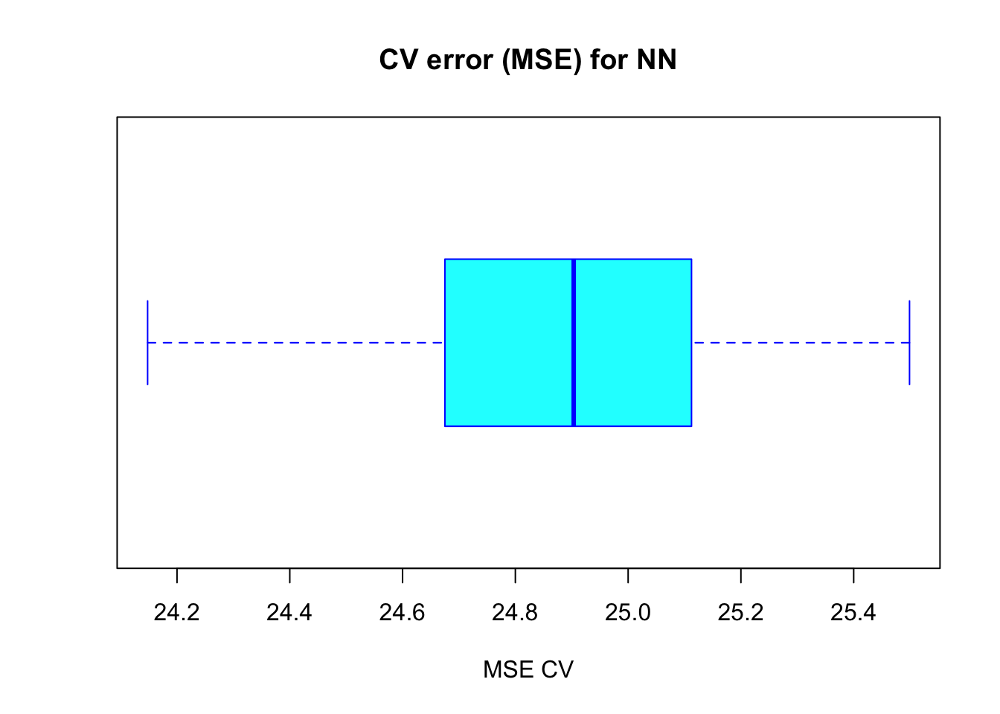
Copyright © 2016 Kezhan SHI